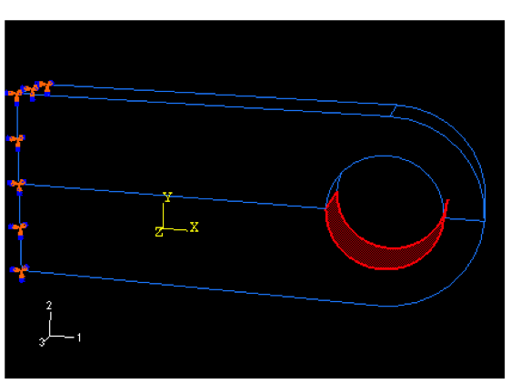
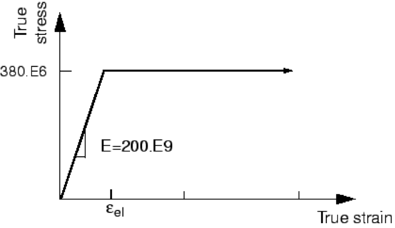
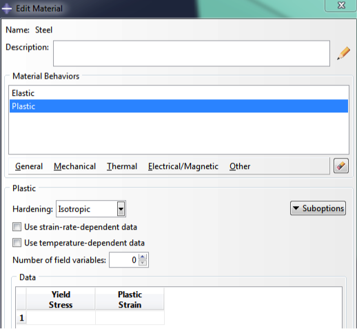
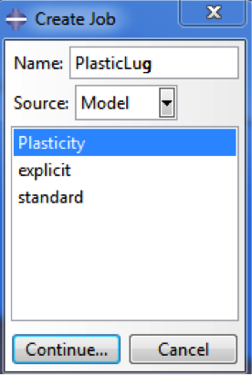
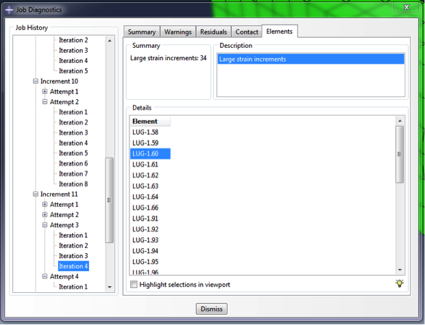
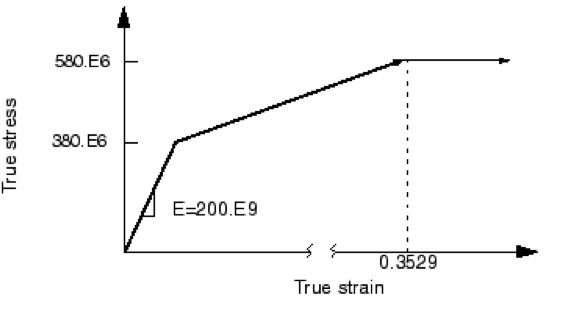
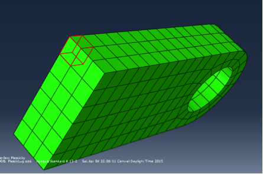
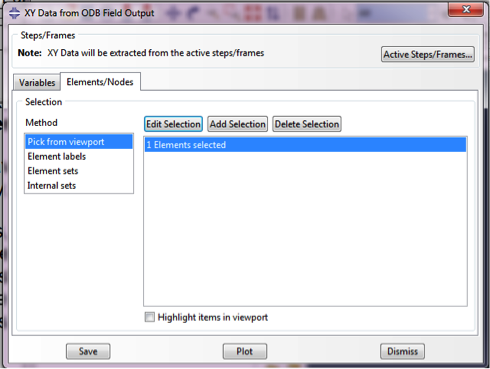
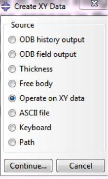
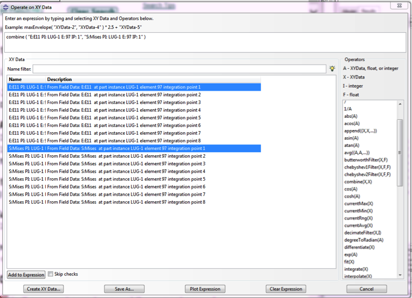

Exercise 5.1: Plastic Connecting Lug¶We try to add some plasticity into the linear connecting lug model
Import the example cae file for linear elastic Connecting Lug model¶In the main menu, select Plug-ins→Abaqus→Getting Started, select Connecting lug example
(Run, you may see some error message, it is Ok).

In the Models tree, you have two models, one is explicit, the other is standard, we copy the standard model, name it Plasticity.
(Note: Right click on standard and copy model)
Modify material property and Apply Large Load¶The previous model is linear elastic, we need to change the material property. We will first try perfect plasticity (see below).
Expand the model Plasticity → Materials, edit the Steel material. In the Edit Material dialog, select Mechanical→Plasticity→Plastic


From the stress-strain curve, the yield stress is 380E6 and plastic strain is 0.0(perfect plasticity)
Expand the Step tree, double click on the second step: LugLoad, the Edit Step dialog appears.
Here we go to Incremenation tab, change the Initial increment size to 0.2 (Note: For a nonlinear process, you always need small increment to get converge.)
To make the plasticity occur, we need a load larger than 380E6, expand LugLoad tree, expand Loads, Pressure load (Created).
In the Load Manager, Edit Load, change the Magnitude to 10E7.
Error check and Correction¶Now, you can run the job, close Plasticity tree and expand Analysis. double click on the Jobs, create a new job named PlasticLug.
Select Model Plasticity. In the description, write down “Perfect Plasticity”. Submit the job.

Unfortunately, we have some errors, open the monitor, we can see that in the Errors Tab:
“Time increment required is less than the minimum specified”.
Enter the Visualization module, in the Main menu, select Tool→Job Diagnostics; here you can see the details of each step and increment.
Expand to the 1st Step, 1st increment, 1st iteration. You can see the residual

The applied load of 60 kN exceeds the limit load of the lug, and the lug collapses when the material yields at all the integration points
through its thickness. The lug then has no stiffness to resist further deformation because of the perfectly plastic post-yield behavior of the steel.
Now we add a hardening process in the material property (Fig). Open the Steel material, in the Edit Material dialog, edit the Plastic Material Behaviors.
Add one more line. E=580E6, v=0.35. Save and run again.

Rerun and Postprocess¶This time, we success! Try to visualize the Von-Mises stress in deformed shape, and draw stress-strain curve (XY data, you may need to toggle on
strain in the field output and re-run it to get strain data).
- Draw the Von Mises contour.
- Query tools
From the main menu, select Tool→ Query or use the  icon, icon,
Select Probe values in Visualization Module Queries .
Select Element, output position: Integration Pt, choose elements from viewport.
3.Draw stress-strain curve
This time use two field outputs draw one XYplot.
We will plot stress-strain curve at one integration point at the specific element shown below.

Use Display Group tool visualize only this element.
Create XY Data from ODB field output. Extract Von-Mises stress and E11 as stress/strain value.
In the Element/Nodes tab, toggle on Edit Selection, Method: Pick from viewport.

Select the element, click Done, click Save.
Create XY Data by Operate on XY data.


In the Operate an XY Data box, choose operator combine, and select the stress/strain at the same integration point, plot the figure.
|

 This content is available under a
This content is available under a